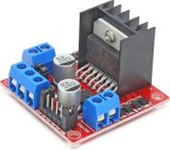
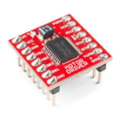

4. Electrical Sub-system
4.1 Sub-system specific Value Proposition and Design statement
As identified in the previous semester, the 2 main value propositions for the electronic subsystem are to provide:
- Solution that acts as a reliable instrumentation platform for all departments to use to collect samples and data
- Solution that has a modular design that functions like a platform that allows for future proofing
Based on these propositions, the key design statements were established:
- Solution that collects soil moisture, temperature, and relative humidity
- Solution that can power and control science experiments
- Solution that provides a reliable communication channel between the main computer, sensor module, and science experiment module
In this semester, I have not deviated or made any changes to these criteria. Instead, I have made multiple iterations to the prototype to address the initial shortcomings identified. As for the future works, however, some adjustments had to be made to fit the solution better, which will be discussed in the following sections.
Additionally, in alignment to the value propositions, I have expanded on 2 new design statements to meet the demand of the extra work that I have undertaken:
- Enabling the rover to collect soil samples from 10cm underground.
- Providing housing for all required experiment components.
4.2 Concept Development
As an electronic lead, I took up the task of choosing the mechanical components needed for the science module. From this, I could work backwards to find which electronic components need to be integrated. These are the mechanical functions required:
- Drilling - requires a motor for drilling
- Moving the drill down to the soil - requires a linear actuator to bring the drill down
- Moving the sensors down into the drill hole - requires a linear actuator to bring the sensors down
- Carousel for spectroscopy - requires a stepper motor for specific rotation
Working backwards to find electronic components to enable these functions is:
- DC motor driver - controlling the drill speed and direction
- H-bridge motor driver - controlling the direction of the linear actuator
- H-bridge motor driver - controlling the direction and rotation of the stepper motor
The connection between them can be seen in the flowchart below.
Choosing the motor for drilling
As there are multiple types of DC motors, I compared which type of motor is the most appropriate for drilling soil. The first considerations were the torque and RPM. Since our experiment would be done in the desert of Arizona, we would need high torque and low to moderate RPM motors. In addition, though I considered a much more efficient brushless DC motor to be used, due to its torque and RPM, a DC brushed motor with a gearbox was chosen. With consideration for price and procurement timeline, IG42 from Cytron was chosen.
| Type of motor | Torque (25%) | Efficiency (10%) | Durability (10%) | Cost (10%) | Simplicity (25%) | Availability (20%) | Average score |
|---|---|---|---|---|---|---|---|
| DC brushed motor | 5 | 3 | 3 | 5 | 5 | 5 | 4.6 |
| DC brushless motor | 3 | 5 | 5 | 4 | 3 | 4 | 3.7 |
Figure 3C: weighted decision matrix for Drill motor
With the rated current of IG42 being 5.5A, I decided to use Cytron's recommended motor driver MD10C, which could accommodate up to 10A constant output and 3.3-5V logic level from GPIO.
Choosing the motor for moving the drill into the soil
There are 2 main systems that are used for this application. One is a linear actuator and the other is a DC motor with a lead screw mechanism.
| Requirement | Linear Actuator (Chosen) | DC motor + Lead Screw |
|---|---|---|
| Precision & control | ✅ | ❌ requires additional sensors |
| Ease of integration | ✅ | ❌ |
| Holding force | ✅ | ❌ requires brake/feedback loop |
| Energy Efficiency | ✅ | ❌ requires constant power to hold position |
| Complexity & Maintenance | ✅ | ❌ |
Figure 3D: Comparison matrix for motor moving the drill module
As for the linear actuator, it has to reach 10cm beneath the soil. Hence, in the case that we place the linear actuator at a height of 20cm (diameter of the wheels), I will need the linear actuator to extend at least 30cm into the soil.
Choosing the motor for the carousel used in spectroscopy analysis
In the case of the motor for the carousel, we need to make sure that the maximum axial load is greater than the weight of the carousel, including the sample solutions. The 2 main motors used for controlled rotating motions are stepper and servo motors.
The table below demonstrates how different components are chosen in relation to alternatives.
| Requirements | Stepper motor (Chosen) | Servo motor |
|---|---|---|
| Precise positioning | ✅ | ✅ |
| Sufficient load capacity | ✅ | ✅ |
| Energy efficiency | ✅ | ❌ |
| 360-degree rotation | ✅ | ❌ |
Figure 3E: Comparison matrix
Choosing the H-bridge for linear actuator and stepper motor
| Criteria | Importance |  L298N (Initial) |  TB6122FNG (Final) |
|---|---|---|---|
| Size efficiency | 5 | 2 | 5 |
| Power efficiency | 4 | 3 | 5 |
| Electrical specs | 4 | 4 | 5 |
| Ease of integration | 3 | 3 | 4 |
| Overall Score | 53 | 72 |
Figure 3F: Weighted decision matrix for H-bridge motor driver
For the H-bridge motor driver, initially, L298N was chosen to be used for both the linear actuator and the stepper motor. However, after the 2nd round of PCB iteration, it was found that the size of L298N was taking up a disproportionate amount of space on the motherboard PCB. Hence, TB6122FNG was chosen as its replacement due to its high efficiency, electrical specification, and form factor. This will be further discussed in the prototype section.
4.3 Prototyping
Prototyping the motherboard (2nd iteration)
To make sure that all the power connectors are standardised in polarity, I had decided to use XT60 for all the connections regarding power. The XT60 female is used for power input, and the XT60 male is used for power output. This includes:
- 24V power in (Female)
- 12V power out (Male)
- DC_MOTOR_OUT_1_+/- (Male)
- DC_MOTOR_OUT_2_+/- (Male)
- L298N_OUT_1/2 (Male)
- L298N_OUT_3/4 (Male)
The new design allows MD10C driver and L298N H-bridge drivers to be directly connected to the GPIO pins of the Raspberry Pi 5 (RPI5). The mechanical components will be powered through XT60 connectors on the driver's output terminal.
From the previous semester's future work, I had mentioned that there were several flaws to the first PCB prototype, which were:
- Lack of labels for future users
- Thermal issue where RPI5 reaches a temperature above 55 ℃
The thermal issue can be seen in the simulation under the extended full load scenario.
The test was done with a setting where the air temperature was set at 25 ℃, minimal air velocity, and RPI5 was using 25W of power (worst case scenario). At its peak, certain parts of RPI5 were reaching temperatures up to 85 ℃. Hence, the RPI5 cooling fan was added, which helped the CPU from throttling past the appropriate temperature of 55 ℃.
Prototyping the motherboard (3rd iteration)
Additional XT60 output pins:
- STEPPER_1/2 (Male)
- STEPPER_3/4 (Male)
- LINEAR_ACTUATOR_1_+/- (Male)
- LINEAR_ACTUATOR_2_+/- (Male)
This iteration was to fix a major issue where the stepper motor needs 1 H-bridge for itself. Hence, I had to use 2 H-bridge motor drivers. However, due to the problem mentioned in the concept development section, I had to redesign the board.
In addition, with the life science UREX team suggesting a vibration motor and a pump motor to be added, I had to introduce ESP32 due to the lack of GPIO pins in RPI5. In this decision, I had to change connections from electronic components to ESP32, except for the Relay.
Since the relay served as an important safety feature of isolating the 12V power rail, I had to leave the control of the relay to RPI5 so that the user had direct authority over the relay through RPI5 instead of indirect control through ESP32.
The additional JST 2.54mm pins on the right and top side of the boards are to accommodate PWM and digital pins.
On top of these new features, I have added surface-mounted (SMT) light-emitting diodes (LEDs) to signal when corresponding devices are being used:
- Drill motor status
- Stepper motor status
- 12V power rail status
3D printed sensor probe
For the soil moisture, relative humidity, and temperature sensor to measure the characteristics of soil 10cm underground, I had to design a probe that attaches to the linear actuator. This probe includes a hollow body for wires to pass through and an M8 hole to be securely mounted to the linear actuator. The probe would be used right after a hole is created by drilling.
Designing the drill connector for the linear actuator
The assembly consists of 3 main parts:
- 3D printed drill motor to linear actuator connector
- Guide rail
- 20x20 profile bars
The first concern with the 3D printed connector was that the line of action of the linear actuator had to pass through the center of the drill motor. This was to make sure that the torque induced by the drill would not cause the swinging of the whole system as it would:
- Cause the drill hole to be away from the center of the drill
- Lead to the dangerous swinging of a sharp, spinning drill bit
- Cause mechanical failure, such as the drill module breaking off from the main rover chassis
However, the 3D printed connector is not able to address all these issues. To address them, a linear guide rail is required to make sure that the extension is indeed linear. Thus, the connector is screwed onto the slide on both sides. However, these measures do not constrain the remaining side axis.
Thus, I used 20x20 profile bars to ensure that the remaining side axis is constrained as it will provide multiple points of contact with the main rover chassis using M5 screws and rhombus nuts.
Making the acrylic panel body
While designing the acrylic panel, I had to consider certain points. For one, it was the placement of the PCB mounting hole. To ensure that enough space is left for the carousel, vibration motor, and pump motor, I decided to place it on the side plate. This was also to ensure that the wires could be routed properly through both the first and second layers of the box.
Secondly, the hole on the bottom is made for the microscope to point down to the ground. It was placed next to the PCB to make the wiring of the microscope easier without it tangling with moving parts such as the carousel.
Lastly, as seen on the side of the PCB, there are tiny holes for cable ties which make it easier to carry out cable management.
4.4 Testing and analysis
Thermal testing
To verify that the RPI 5 cooling kit was sufficient, I used a Flir thermal camera to check for its temperature and idle, and peak usage.
Idle usage refers to when the camera module, spectroscope module, and image processing module are not being used. Peak usage refers to when all the modules listed are being used simultaneously.
For the idle use case, the temperature of the heat sink was 50.9 ℃, and that of the CPU was 57.7 ℃.
For the peak use case, the temperature of the heat sink was 53.5℃, and that of the CPU was 66.7℃.
Hence, with the addition of the cooling kit, it does not reach the throttling point - 85℃. However, it is still hotter than the threshold of 55℃. This is important for 2 reasons:
- Potential damage to components over prolonged use
- Potential to throttle in the hot desert of Arizona
While I recognise that the cooling kit is sufficient for current testing use, I would require greater mechanical expertise/guidance for a more nuanced thermal solution.
Power testing
Using 20x20 profile bars, I built a test bench where I can simulate the drilling task. The objectives of the test are two-pronged:
- Power test
- Graphic User Interface (GUI) test
I will be covering the power test as the GUI test is covered by Shobhit.
The task involves extending the linear actuator, stopping, drilling, and finally retracting back. The power usage is then measured by a power meter as shown below.
Figure 5D: Power meter
I wanted to measure each component at different stages without any load. Once done, I changed the load to our typical use case scenario and repeated the experiment.
Power testing analysis
Figure 5E: Power testing result table
Using power usage from each component under different loads, I charted out a few combinations of electrical usage. The green represents lower power usage, and red represents higher power usage. The 2 main objectives of this test were to find out:
- Whether we are overshooting the power budget.
- How individual components affect the power usage.
From this, we can see that in the peak power usage, we use up to 120.36W, which is well below the 240W power budget. Hence, there is extra capacity for additional components to be attached by the next team that will take over the project.
Additionally, we can see that linear actuators and stepper motors are able to take on greater loads as the linear rate of increase in power usage is marginal. This also allows for future teams to add more attachments to these motors in case of feature expansion.
Sensor calibration
The Adafruit 4026 soil moisture sensor that I am using is capacitive. It is known for its affordable price, but it is not as accurate compared to other types of soil moisture sensors. This was a problem that I found out after carrying out a test in the previous semester using a normalization method. This was caused due to the fact that wetness of 100% referred to submersion of the sensor into the water. In our case, however, soil moisture at 100% refers to an equal mass of water and soil.
To calibrate the sensor for our use case, I used gravimetric water content measurement, which is given by these equations (Hrisko, 2020):
Where the Moisture Percentage is given by
To find m and b, I carried out the experiment using dry gardening soil. The data collected can be seen in the table below:
From this, I could plot a graph as such:
The calibration has shown that it will yield an RMSE of 46, which in the worst-case scenario will lead to 10% inaccuracy (dry soil). However, as a whole, the normalised RMSE value is approximately 1.5%. This means that when trying to find water signatures in the soil, I will need to make sure to increase the threshold for water moisture level to above 5% to make sure that the error caused by random noise or interference will not affect the rover's decision-making.
Deliverable achieved
Due to the mechanical work that I had to undertake, the software solution that I promised to fulfill has been fulfilled by Shobhit. Hence, through our cooperation, the electronic sub-system team has achieved all the design statements proposed:
- Solution that collects soil moisture, temperature, and relative humidity
- Solution that can power and control science experiments
- Solution that provides a reliable communication channel between the main computer, sensor module, and science experiment module
- Solution that enables the rover to collect the soil 10cm underground
- Solution that houses all the components required for the experiment
In addition, I have also value-added through:
- Simplifying the integration of the science module to the rest of the rover through standardised connectors
- Safety features for both the team and the rover through a high-power control relay and status LEDs
- Providing room for additional hardware for the science module in the future through the power budget and additional digital and PWM IO pins
Shortcomings and future work
Shortcomings
The shortcomings that I have identified are mainly the mechanical system which I have designed. Due to my lack of domain expertise in Mechanical engineering, I was not able to carry out any mechanical simulations or analysis required to truly justify my design choices.
In addition, my initial plan was to port all the components from RPI5 over to ESP32. This was to make sure that there were enough GPIO pins for future expansions. In addition, ESP32 has wireless communication features such as Bluetooth and WIFI access point mode which could be used to make wireless transmission between different sub-systems.
However, due to a lack of team effort from the mechanical sub-system, I had to take up the work of the mechanical sub-system to ensure that the science module was integrated as a whole. This meant that there was not enough time for me to integrate the final PCB into the science module.
Future work
As for the future work, I would like the next batch of the electronic team to:
- Migrate all peripherals to ESP32
- Integrate the science module into the main Rover chassis
- Carry out full system testing in the field
In addition, I would like to suggest that the next team carry out a full mechanical simulation of the science module. This is to ensure that the design choices made are indeed valid and that the system is safe for use. This will also enable them to find faults and work on improving on the weakest part of the link in the project which is the mechanical system.
With ESP32 integrated, the future team should aim to use its wireless features and low power mode to create a more robust system that can build onto the platform that I have created.
Reference
Hrisko, J. (2020). Capacitive soil moisture sensor theory, calibration, and testing. Maker Portal LLC. DOI: 10.1145/978-3-31921-68573